Using Behave Pro
This section contains articles that describe how to use Behave Pro features within JIRA. Use the menu at the left, or click one of the links below.
Add a Scenario to a JIRA Issue
In JIRA, developers will use an issue to manage a user story or software requirement. Consider an example requirement for inventory management, in which a store manager wants any item that arrives as a result of a refund or an exchange to be put back into stock.
“Refunded or exchanged items should be returned to stock.”
At right, we show the JIRA issue that represents this requirement.A scenario is an example that clearly elucidates the requirements. The Behave Pro plugin adds features to JIRA so that team members can associate one or more scenarios with a JIRA issue.
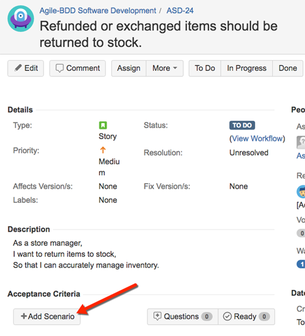
Often, it’s best to have two or more examples.Here is are the steps for one scenario that complements the JIRA issue above:
Given a customer previously bought a black sweater
And I currently have three black sweaters left in stock
When the customer returns the sweater for a refund
Then I should have four black sweaters in stock
Below the Description, in the Acceptance Criteria of the JIRA Issue page, you’ll find the + Add Scenarios button. Click that button to add a scenario, then enter the Feature name, Scenario title and the Steps. When the scenario is complete, click the Create Scenario button. See the figure to the right.
For illustration, here is another scenario that you could add to this issue:
Given that a customer buys a blue garment
And I have two blue garments in stock
And I have three black garments in stock
When he returns the garment for a replacement in black
Then I should have three blue garments in stock
And two black garments in stock
Link a Scenario to a JIRA Issue
You can link an existing scenario to an issue, so that any modifications to that scenario will generate an email notification explaining the content of the change and the user who made the change. To link a scenario to an issue, follow the steps below.
1. Navigate to the Specification page an, on the left, choose a scenario that you want to link to a specific issue.
2. Click the small JIRA icon adjacent to the Scenario heading.
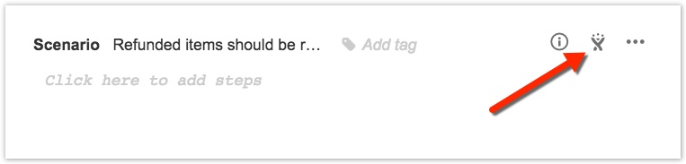
3. A pop-up window will appear, similar to the figure below. Click the Link existing issue button.
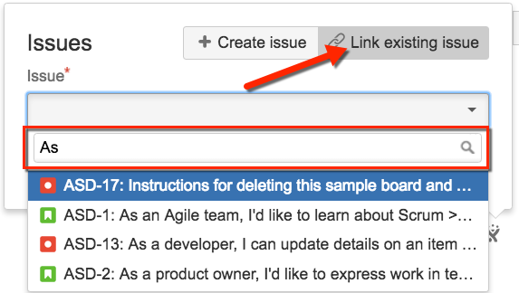
4. In the text box, begin typing to search your issue list. When the issue is found click the Link button to establish the link.
Status Mapping
Mapping custom statuses from JIRA to Behave Pro
You can map custom JIRA statuses to the Behave Pro statuses by dragging unmapped statuses to a one of 3 columns, “Open”, “Work in Progress” and “Closed”.
- OPEN for scenarios attached to issues that have not been started yet
- WIP for scenarios attached to issues that are in progress, useful for selecting the current working set of scenarios
- COMPLETED for scenarios attached to resolved issues, useful for regression testing existing functionality
These statuses will be applied as tags on the exported scenarios, allowing you to filter them in the BDD tool of your choice. For example, in Cucumber-JVM, you would run WIP scenarios as follows:
$ cucumber –tags @WIP
To map your statuses to Behave Pro, go to the project administration page and click on the Behave Pro mapping sidebar item.
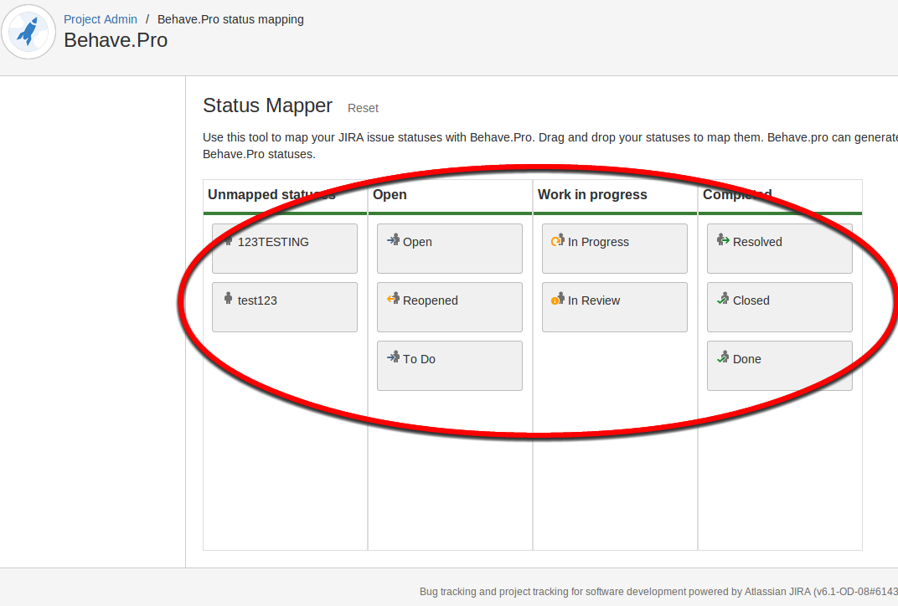
Any statuses that you have added to JIRA should show up in in the unmapped column, drag them to the appropriate column and it will autosave. That’s it! Simple!
Test Automation
Once you have written your Scenarios inside JIRA, you can pull them to your development environment using one of our clients. We currently have clients for Maven and Gradle with Java, the .NET platform, Python and Ruby.
Java with Maven
The first step is to add the Hindsight Software Maven repository to your projects Maven pom file.
<pluginRepositories>
<pluginRepository>
<snapshots>
<enabled>false</enabled>
</snapshots>
<id>hindsighttesting.release</id>
<name>Hindsight Software Release Repository</name>
<url>http://repo.hindsightsoftware.com/public-maven</url>
</pluginRepository>
</pluginRepositories>
Next, the plugin declaration can be added to the pom file. The plugin has 4 required parameters: “server” which is the url to your JIRA Server instance and “projectKey” which is the key of the ID of the project you want to generate acceptance tests for, “username” the User ID for accessing Behave Pro and “password” the API Key for authenticating the User ID and Project ID’s.
<plugin>
<groupId>com.hindsighttesting.behave</groupId>
<artifactId>behave-maven-plugin</artifactId>
<version>1.0.4</version>
<configuration>
<server>https://behave.pro</server>
<projectKey>10100</projectKey>
<username>REPLACE WITH YOUR JIRA USERNAME</username>
<password>REPLACE WITH YOUR JIRA PASSWORD</password>
</configuration>
<executions>
<execution>
<goals>
<goal>features</goal>
</goals>
</execution>
</executions>
</plugin>
Configuring Cucumber
The first step is to add the cucumber dependencies to the maven project. We will be using Cucumber’s JUnit runner to run our tests so JUnit will also be a dependency.
<dependencies>
...
<dependency>
<groupId>info.cukes</groupId>
<artifactId>cucumber-picocontainer</artifactId>
<version>1.0.10</version>
<scope>test</scope>
</dependency>
<dependency>
<groupId>org.picocontainer</groupId>
<artifactId>picocontainer</artifactId>
<version>2.14.1</version>
</dependency>
<dependency>
<groupId>info.cukes</groupId>
<artifactId>cucumber-junit</artifactId>
<version>1.0.10</version>
<scope>test</scope>
</dependency>
<dependency>
<groupId>junit</groupId>
<artifactId>junit</artifactId>
<version>4.10</version>
<scope>test</scope>
</dependency>
...
</dependencies>
Create a java class called “CucumberIT” in the “src/test/java” folder of your maven project. Annotate this class with the following annotations.
import org.junit.runner.RunWith;
import cucumber.junit.Cucumber;
@RunWith(Cucumber.class)
@Cucumber.Options(format = { "json", "json:target/cucumber.json" }, features = { "target/generated-test-sources/" }, strict = true)
public class CucumberIT {
}
These annotations turn a standard JUnit test into a cucumber test which loads and executes the scenarios from JIRA (The behave-maven-plugin generates these). To run this JUnit/Cucumber test during the Maven integration-test phase you need to add the maven failsafe plugin.
<plugin>
<groupId>org.apache.maven.plugins</groupId>
<artifactId>maven-failsafe-plugin</artifactId>
<version>2.12</version>
<executions>
<execution>
<id>integration-test</id>
<goals>
<goal>integration-test</goal>
<goal>verify</goal>
</goals>
</execution>
</executions>
</plugin>
When you put this all together and run it using “mvn verify” the acceptance tests are extracted from JIRA and run by cucumber. From the output of Maven you can see the tests failed. They failed because Cucumber is trying to match each step in your Scenario with a method in Java and could find any matches. If it finds a matching method it will execute it or it fails the scenario (Test) and skip over the remaining steps in the scenario. All that is left to do is implement the cucumber step definitions. When Cucumber can’t find a matching method to a step it will generate a code snippet for you to copy into your code and implement. In the console before the test results you will see code snippets for all the steps. All that is left to do is implement the cucumber step definitions by creating a new Java class in our project and copy ‘n’ paste the snippets
Java with Gradle
The Gradle task can be installed automatically by configuring your Gradle scripts to fetch the task and its dependencies using standard Maven resolution.
buildscript {
repositories {
maven { url 'http://repo.hindsightsoftware.com/public-maven' }
mavenCentral()
}
dependencies {
classpath group: 'com.hindsighttesting.behave', name: 'behave-gradle-task', version: '1.0.0-1'
}
}
The above script will automatically download the task from the Hindsight Maven repository, and make it available to the buildScript of your projects.
Configuration
Adding a task to download Acceptance Tests from Behave
To download the Acceptance Tests (Feature files) you need to create a task implementing “com.hindsighttesting.behave.gradle.FeaturesTask”. This type has been added by the automatic installation described above.
task behavefeatures(type: com.hindsighttesting.behave.gradle.FeaturesTask) {
projectKey = '10100'
server = 'https://behave.pro'
username = 'REPLACE WITH YOUR JIRA USERNAME'
password = 'REPLACE WITH YOUR JIRA PASSWORD'
destinationDir = 'build/generated-test-sources/cucumber'
}
Configuring Cucumber
Don’t forget to execute the Behave Download Task before executing Cucumber, or you won’t have any tests to execute. This can be simply done by adding a dependency from your Cucumber task to the Behave Task.
dependsOn assemble, behavefeatures
Also you will need to tell Cucumber where to find the Acceptance Tests (Feature files) you have downloaded (The “destinationDir” property in the Behave Task)
args = ['-f', 'pretty', '--glue', 'build/classes/test', 'build/generated-test-sources/cucumber']
Ruby
You have two options for working Behave, Cucumber and Ruby: 1. The command line client 2. Rake build scripts Both require the Behave gem to be installed
Installing the Behave gem
The gem is hosted on RubyGems at https://rubygems.org/gems/behave and is available direct from the website or using RubyGems. Assuming you have Ruby and RubyGems installed on your system, run
$ gem install behave
and you will have installed the behave ruby client and its dependencies. Depending on your system, you may have to prefix the command with “sudo”
Using the command line
Installing the gem will have placed a binary on your path named “behave”. The output of “behave –help” is as follows:
Usage: behave [options]
Specific options:
-h, --host HOST Host URI for JIRA installation - This should be https://behave.pro
-u, --user USER JIRA username
-p, --pass PASS JIRA Password
-k, --key KEY Project ID from the JIRA Project Admin Page
-d, --directory [DIR] Specify output directory (default 'features')
-m, --manual Include manual tagged scenarios in download
--proxy PROXY_URL Pass requests through a PROXY_URL
--bypass-ssl Bypass SSL certificate checking
--help Show this message
--version Show version
An example call could look like this:
$ behave --host https://behave.pro \
--user "REPLACE WITH YOUR JIRA USERNAME" \
--pass "REPLACE WITH YOUR JIRA PASSWORD" \
--key 10100 \
--directory features \
--manual
This would download all .feature files from the PROJ project to the features directory (relative to the directory behave was run from), including all scenarios tagged as manual. Host and Key are the only required arguments, which defaults to an anonymous login downloading all features to the directory the command is run from.
Rake
You are more than likely to be using Rake in your Ruby project for scripting your builds. Cucumber comes with its own Rake task ready for you to use and looks like this
require 'cucumber/rake/task'
Cucumber::Rake::Task.new(:features) do |t|
t.cucumber_opts = "--format pretty"
end
This cucumber task can be executed using the following command
$ rake features
As our Features and Scenarios are stored within JIRA we will need to download them. To do this we will add a new Rake task that will download them using the “Behave” Ruby gem.
require 'behave'
desc "Download features"
task :download do
Behave::FeatureDownloader.new({
'host' => 'https://behave.pro',
'user' => 'REPLACE WITH YOUR JIRA USERNAME',
'pass' => 'REPLACE WITH YOUR JIRA PASSWORD',
'key' => 10100,
'dir' => 'features',
'manual' => true
})
end
This task can be executed using the following command
$ rake download
We can now download our Features and Scenarios from JIRA but we will always have to remember to run “rake download” before “rake features”. To avoid this we can configure the Cucumber “features” task to depend on the Behave “download” task and execute it before running Cucumber. This just requires one additional line in your rake file.
task :features => :download
The full Rakefile can be found in the example project on Bitbucket
Proxy
If you need to specify a proxy to pass requests through, use the –proxy flag from the command line or pass 'proxy’ => 'MY_PROXY’ argument into FeatureDownloader i.e.
$ behave --host https://behave.pro \
--proxy https://some.proxy.url
or
task :download do
Behave::FeatureDownloader.new({
...
'proxy' => 'http://some.proxy.url'
...
})
end
Bypassing SSL
If you experience problems with your SSL certificate, you can bypass SSL checking in behave by using the –bypass-ssl command line flag, or the 'bypass_ssl’ => true FeatureDownloader argument.
.NET
The Gherkin-compatible BDD tool that is generally used with .NET is SpecFlow. We host our .NET client on the NuGet gallery, and it is available through the NuGet Packet Manager Shell:
PM> Install-Package Hindsight.Behave
Alternatively, you can use the built in NuGet Gallery interface from inside Visual Studio 2010/12
Using within a script
You can use the JIRA Connector within your own scripts to download features from Behave:
Using Hindsight.Behave;
public class Demo
{
public void Download()
{
JiraConnector jc = new JiraConnector("https://behave.pro");
jc.Fetch(
// The project id of the target project
project: "10100",
// The API Key username
username: "REPLACE WITH YOUR JIRA USERNAME",
// The API Key value
password: "REPLACE WITH YOUR JIRA PASSWORD",
// Directory to extract features to (relative to script)
directory: "features",
// Boolean whether to include manual tests
manual: true,
// Boolean whether to verify the SSH certificate
verify: true,
// Boolean whether to return feature files that
// are compatible with NUnit.
isNUnit: true
)
}
}
This will download all features from project ID 10100 into the features director, including manual tagged scenarios.
Using with MSBuild
You can use the Behave assembly as an MSBuild task as part of your build process. You can modify the build process for a project by “unloading” it in Visual Studio (right click the project in the solution explorer and click “Unload Project”) and then right clicking and clicking “Edit {PROJECT}.csproj”, or editing the .csproj file directly in the directory for the project. Create a new reference to the Behave.dll assembly, which will be in your project after using NuGet to install it:
<UsingTask
TaskName="Behave"
AssemblyFile="path\to\the\Behave.dll" />
You can then use the Behave task to fetch features, either in one of the existing BeforeBuild or AfterBuild target blocks, or by defining your own as we have below:
<Target Name="Test">
<Behave
host="https://behave.pro"
project="10900"
username="REPLACE WITH YOUR JIRA USERNAME"
password="REPLACE WITH YOUR JIRA PASSWORD"
directory="Features\"
manual="true" />
</Target>
Step by Step with Visual Studio 2013
This guide will take you from a new solution through to integrating Behave Pro with SpecFlow, and running the feature files.
Visual Studio setup
Install SpecFlow for Visual Studio 2013 from the Extensions and Updates dialog in the Tools menu, and restart Visual Studio when prompted.

Project setup
Create a new solution, containing a project for the Application and a project for the Specs (download the prepared solution file here).
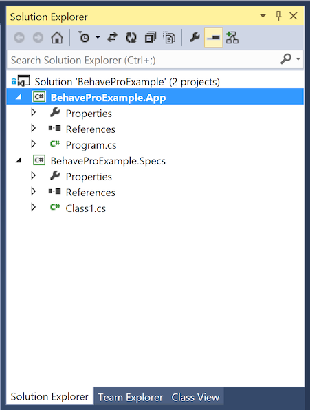
Install the Hindsight.Behave, SpecFlow, SpecFlow.NUnit, NUnit, NUnit.Runners and NUnitTestAdapter into your solution, using the NuGet Package Manager from the Tools menu.

Configuring MSBuild task
Unload the Specs project, in order to edit the .csproj file (which is the MSBuild configuration used to build that particular project)
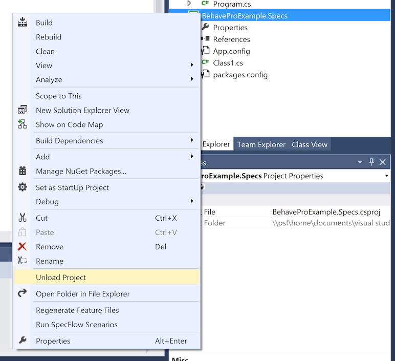 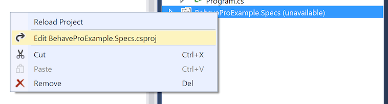
In the .csproj file, uncomment the last section of the root Project element which defines Targets, and add the below code:
...
<UsingTask
TaskName="Behave"
AssemblyFile="..\packages\Hindsight.Behave.0.1.8\lib\Behave.dll" />
<Target Name="BeforeBuild">
<Behave
host="https://behave.pro"
project="10900"
username="REPLACE WITH YOUR JIRA USERNAME"
password="REPLACE WITH YOUR JIRA PASSWORD"
directory="Features\"
manual="true"
nunit="true />
</Target>
In the UsingTask block, the AssemblyFile path can be found further up the .csproj file:
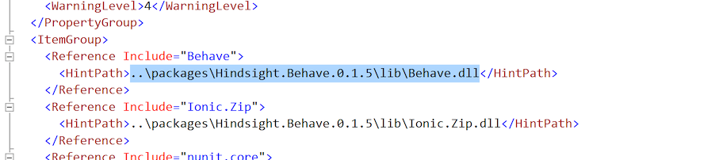
Then, reload the project from the Project Explorer.
Fetching and including Feature files from Behave Pro
By building the Specs project, the Feature files will be fetched from Behave Pro. They will not initially be visible in the project explorer, so if you click “Show All Files” you can include the Features directory into the project.
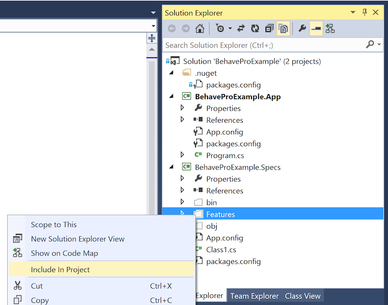
Generating step definitions
Follow the SpecFlow Getting Started guide to generate Step definitions for all the .feature files that were fetched.
Filtering which scenarios to run
The build tool will download all the features for the project to your local machine. In order to only run certain tests (e.g. by tag, by assignee, by issue), switch the Test Explorer view to Traits.
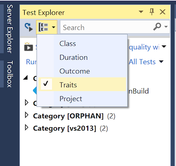
Python
We host our Python client PyPi, and it is available through pip or by direct download. Assuming you have Python and pip installed on your system, run:
$ pip install hindsight
You will have installed the behave python client and all its dependencies. Depending on your system, you may have to prefix the command with “sudo”
Using from the command line
Installing the package will have placed a binary on your path named “behave-cli”. The output of “behave-cli –help” is as follows:
$ behave-cli HOST KEY [-u USERNAME] [-p PASSWORD] [-d DIR] [-m]
An example usage would be:
$ behave-cli https://behave.pro 10100 \
-u "REPLACE WITH YOUR JIRA USERNAME" \
-p "REPLACE WITH YOUR JIRA PASSWORD" \
-d features \
-m
which uses your API key user name and value to download features from project ID 10100 into the features directory, including all manual scenarios.
Using from within a script
You can use the JIRA connector within your own scripts to download features from Behave
#!/usr/bin/env python
from hindsight.behave import JiraConnector
jc = JiraConnector()
jc.fetch(
host='https://behave.pro',
username='REPLACE WITH YOUR JIRA USERNAME',
password='REPLACE WITH YOUR JIRA PASSWORD',
key='10100',
dir='features',
manual=True
)
This will download all features from project ID 10100 into the features director, including manual tagged scenarios.
NodeJS
The Behave Pro Node client is available from NPM, and can be installed using the following:
$ npm install behavepro -g
NodeJS and NPM are both required to be installed.
Using from the command line
Parameters can either be passed from the command line:
$ behavepro [–id PROJECT ID] [–userId USER] [–apiKey KEY]
Available parameters:
- [–host HOST] Behave Pro host (JIRA instance url)
- [–id PROJECT ID] JIRA project id
- [–userId USER] JIRA username
- [–apiKey KEY] JIRA password
- [–output DIRECTORY] Output directory - default: 'features’
- [–manual] Include scenarios marked as manual
- [–config CONFIG] JSON config file - relative to current directory
If the three required parameters are missing, they will be attempted to be read from a json config file in the current directory:
$ behavepro
config.json example
[{
"id": 10000,
"userId": "REPLACE WITH YOUR JIRA USERNAME",
"apiKey": "REPLACE WITH YOUR JIRA PASSWORD"
}, {
"id": 10100,
"userId": "REPLACE WITH YOUR JIRA USERNAME",
"apiKey": "REPLACE WITH YOUR JIRA PASSWORD"
}]
Using from within a script
You can use the client in your own scripts to download features from Behave Pro.
$ npm install behavepro –save
var BehavePro = require('behavepro');
BehavePro({
"id": 10000,
"userId": "REPLACE WITH YOUR JIRA USERNAME",
"apiKey": "REPLACE WITH YOUR JIRA PASSWORD"
}, function() {
// done
});
Available parameters:
- “host”: HOST - Behave Pro host - default: 'https://behave.pro’
- “id”: ID - JIRA project id
- “userId”: USERID - JIRA username
- “apiKey”: APIKEY - JIRA password
- “output”: DIRECTORY - Output directory - default: 'features’
- “manual”: true - Include scenarios marked as manual
Data Migration
Appliance to JIRA Server Migration
Prerequisites:
- Behave Pro Migrator
- Behave Pro appliance URL (example: https://bpro.mydomain.com)
- This is the URL of Behave Pro Server itself, originally used to configure JIRA
- Appliance security token
- See below where to find this security token
- Destination JIRA Server URL (example: https://mydomain.com/jira)
- Destination JIRA instance where Behave Pro is installed
- JIRA Username
- Destination JIRA Username
- JIRA Password
- Destination JIRA Password
Appliance security token:
The security token for the appliance can be found in the source of any Behave Pro frame inside JIRA. This process may vary between browsers:
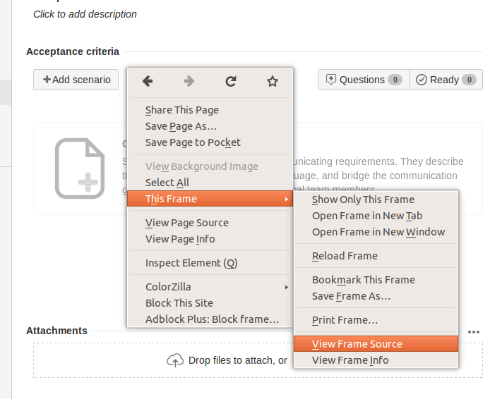
Right click on a Behave Pro panel such as the Acceptance criteria that appears on each issue view, and select Frame > View frame source.
This will display the HTML source of the Behave Pro page. Located within the source is the security token required by the migration tool to authenticate. Near the top of the source you’ll see multiple <meta> lines, you need to identify the one with the name attribute of “acpt” and copy the entire contents of the “content” attribute. Ensure to copy the whole line, it is often too long to display without scrolling horizontally. See screenshot below.
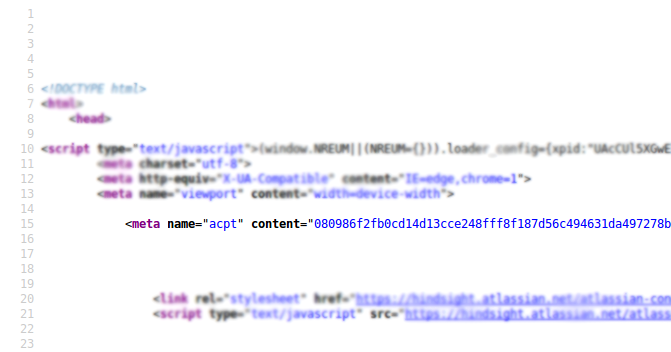
Copy the entire “content” attribute contents inside the quotes and store it somewhere safe ready for the next steps.
Migration
- Open a terminal and browse to the directory containing the Behave Pro Migrator (migrate-1.0-jar-with-dependencies.jar), and execute it with: java -jar migrate-1.0-jar-with-dependencies.jar
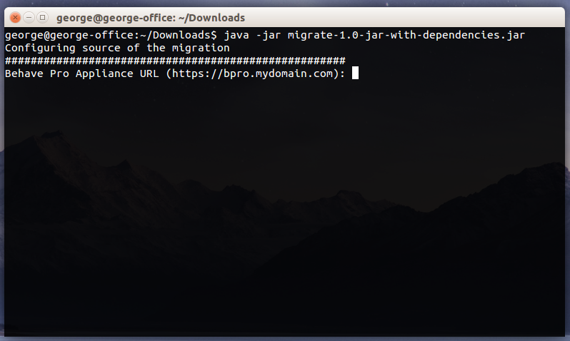
You’ll immediately be prompted for your Behave Pro Appliance URL, enter or paste this in full and press enter to continue.
Next you’ll be prompted for your security token that you saved earlier from the page source, paste this into the terminal and press enter.
You’ll then be prompted for your destination JIRA Server URL, this is the instance where the Behave Pro addon has been installed, and where you’re migrating your data to. Enter this in full and press enter.
Finally you’ll be prompted individually for your JIRA credentials (username and password), these are used to login to JIRA and upload the data you’re migrating. They are not stored or saved anywhere. Enter your username and password separately and press enter after each.
Once you’ve submitted your JIRA credentials the migrator will begin saving your features and scenarios from your old Behave Pro appliance and uploading them to the destination JIRA instance. Follow the progress bar and wait for the success message - this may take some time.
Publisher EULA
LAST UPDATED: November 15th, 2016
This agreement constitutes the “Publisher EULA” as defined in the “Atlassian Marketplace Terms of Use” and extends the terms in the terms and conditions set out in the “Standard EULA” of the “Atlassian Marketplace Terms of Use”
This Publisher EULA is a binding legal agreement between Hindsight Software Limited, (hereinafter “Publisher”) a registered company in England and Wales (Registered number: 08051221), a provider of downloadable and cloud-based applications through the Atlassian Marketplace or any other means that interoperate with applicable products manufactured by Atlassian Pty Ltd (“Atlassian”), and you (either an individual or a single legal entity you represent) whose details are provided to the Publisher upon purchase (hereinafter “Customer” or “you”) for the materials accompanying this EULA, including the accompanying computer software, associated media, printed materials and any “online” or electronic documentation.
1. Scope of the Agreement
a. This Publisher EULA governs (a) Publisher’s commercially available downloadable software products sold, or made available at no charge (“Software”), (b) Publisher’s Software provided in a hosted or cloud-based environment (“Hosted Services”), and © any support services provided by the Publisher relating to the Software or Hosted Services. Software and Hosted Services, together with related Documentation, are referred to herein as “Products”.
b. This EULA does not cover the sale or resale of Atlassian-manufactured software, Licensor’s other professional services relating to Atlassian-manufactured software, nor any physical hardware products provided by Licensor.
2. Title and Intellectual property
Except for the right to use expressly granted herein, all right, title, and interest in and to the Products or any copyrights, patents, trademarks, trade secrets and other intellectual property rights embodied therein or used in connection therewith shall remain with the Publisher and its licensors. The Publisher reserves all rights in the Products not expressly granted to You in these Terms. The Publisher shall own all modifications and derivative works of the Products, whether made by the Publisher, You or any third party, and any suggestions, ideas, enhancement requests, feedback, recommendations or other information provided by You or any other party relating to the Products. You shall not take (and shall not allow any third party to take) any action inconsistent with Publisher’s ownership and interests as set forth above, or assist any third party in doing the same, and You will report to the Publisher promptly in writing any instance of suspected infringement of any intellectual property related to the Products and give the Publisher reasonable assistance in investigating and prosecuting the infringing acts.
3. Limited warranty and Disclaimer of all other warranties
The Product is provided to you strictly on an “as is” and “as available” basis, except that the Publisher warrants that the Product will perform substantially in accordance with the online Product documentation under normal use and circumstances.
All warranties, whether express, implied, statutory or otherwise, including, without limitation, any implied warranty of merchantability, fitness for a particular purpose, or non-infringement of third party rights, are hereby disclaimed to the maximum extent permitted by applicable law by the Publisher and its licensors.
The Publisher and its licensors make no representation, warranty, or guaranty as to the reliability, timeliness, quality, suitability, truth, availability, accuracy or completeness of the Products or with respect to any use that is not in strict compliance with these terms, third party licenses, the rules or any documentation we make available to you via the site or otherwise. Without limiting the foregoing, the Publisher and its licensors do not represent or warrant that
a. the access to or use of the Product will be secure, timely, uninterrupted or error-free or operate in combination with any other hardware, software, system or data
b. the Product will meet your requirements or expectations
c. any stored data will be accurate or reliable, or will not be lost, damage or corrupted
d. errors or defects will be corrected, patches or workarounds will be provided, or the Publisher will detect every bug in the Product
e. the Product or the server(s) that make the Product available are free of viruses or other harmful components
f. third party disruptions and security breaches of the Product will be prevented.
4. Limitation of Liability
The Publisher’s aggregate liability arising out of or related to these Terms, the use of or inability to access or use the Products will be limited, to the fullest extent possible under applicable law, to an amount equal to the amount paid by You for the Product during the three (3) month period immediately preceding the event giving rise to such claim. In no event will the Publisher, its affiliates, subsidiaries, or licensors be liable, except insofar as it is not possible to exclude liability under applicable law,
a. the use of, or inability to use the Product
b. your inability to access the Product or its proper operation due to any malfunctioning network
c. your hardware or software failure
d. inadequate security on your part, specifically in protecting your any usernames, passwords, registration data and physical access to your hardware, networks and systems
e. a failure on your part to comply with applicable legal and regulatory obligations including the payment of any tax in respect of your use of the Product
f. any third party act, in particular remote intrusion or viruses
g. your breach of these Terms
h. for costs of procurement of substitute Products or services, for any special, consequential, incidental, indirect, punitive or exemplary damages (including without limitation for loss of profit)
i. for interruption of use or loss or corruption of data; in each case whether or not the Publisher has been advised of the possibility of such damage or loss, however caused and on any theory of liability, arising out of or related to these Terms, the use of or inability to use the Product.
5. Publicity
The Customer grants the Publisher the right to include the Customers name, company name, logo, and/or likeness that you provide during registration, and any review that the Customer may provide (in full or in part) to the Publisher, within Product promotional material and on Publisher’s web site. The Customer can revoke this right at any time by submitting a written request via email to sales@hindsightsoftware.co.uk, requesting to be excluded from future Product promotional material. Requests made after purchasing may take thirty (30) calendar days to process
6. U.S. Government Users
If you are a U.S. Government end user, the Publisher is providing the Products to you as a “Commercial Item” as that term is defined in the U.S. Code of Federal Regulations (see 48 C.F.R. § 2.101), and the rights granted to you by the Publisher for the Products are the same as the rights the Publisher customarily grant to others under this EULA.
7. Revisions to EULA
Publisher may update, modify or amend (together, “Revise”) this EULA from time to time, including any referenced policies and other documents. If a revision meaningfully reduces your rights, the Publisher will use reasonable efforts to notify you by, for example, sending an email to the billing or technical contact you designate in the applicable Order, posting on our blog, website, or on the Atlassian Marketplace website (https://marketplace.atlassian.com). If the Publisher revises this EULA during your term of your license or subscription, the revised version will be effective upon your next renewal of a License Term, Support Services, Hosted Services or Subscription Term, as applicable. In this case, if you object to any revisions, as your exclusive remedy, you may choose not to renew, including cancelling any terms set to auto-renew.
8. Statute of limitation
The customers agrees that regardless of any statute or law to the contrary, any claim or cause of action arising out of or related to use of the Products or these Terms must be filed within one (1) year after such claim or cause of action arose or be forever barred
9. Termination
You may terminate your license to the Products at any time by destroying all your copies of the Software or ceasing your access to the Hosted Services. Your license to the Products shall automatically terminate if you fail to comply with the terms of this EULA. Upon termination of your license, you are required to remove all Software from your computer systems and destroy any copies of the Software in your possession.
10. Miscellaneous
These Terms will be governed by and interpreted under the laws of England, without regard to its choice of law provisions. The exclusive jurisdiction and venue for actions related to the subject matter hereof shall be the applicable courts located in England.
IF YOU HAVE QUESTIONS REGARDING THESE TERMS OR WISH TO OBTAIN ADDITIONAL INFORMATION, PLEASE SEND AN E-MAIL TO sales@hindsightsoftware.com